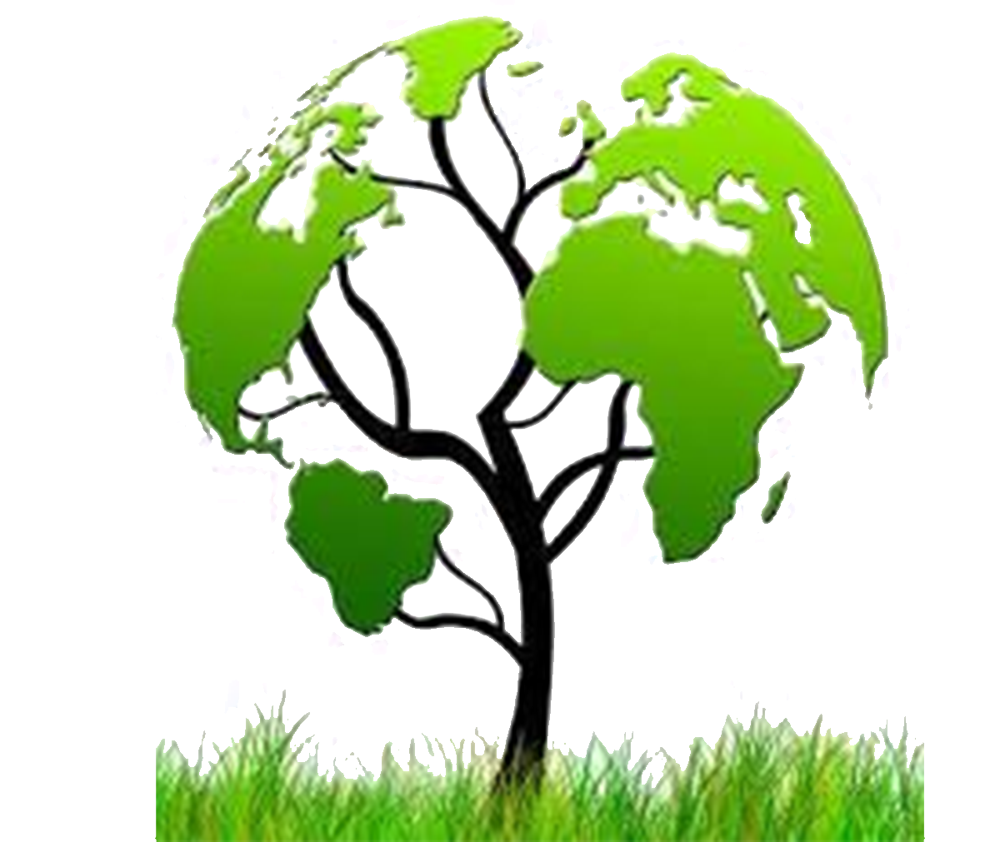
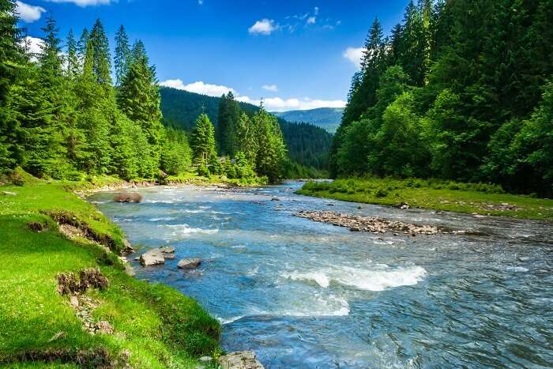
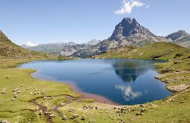
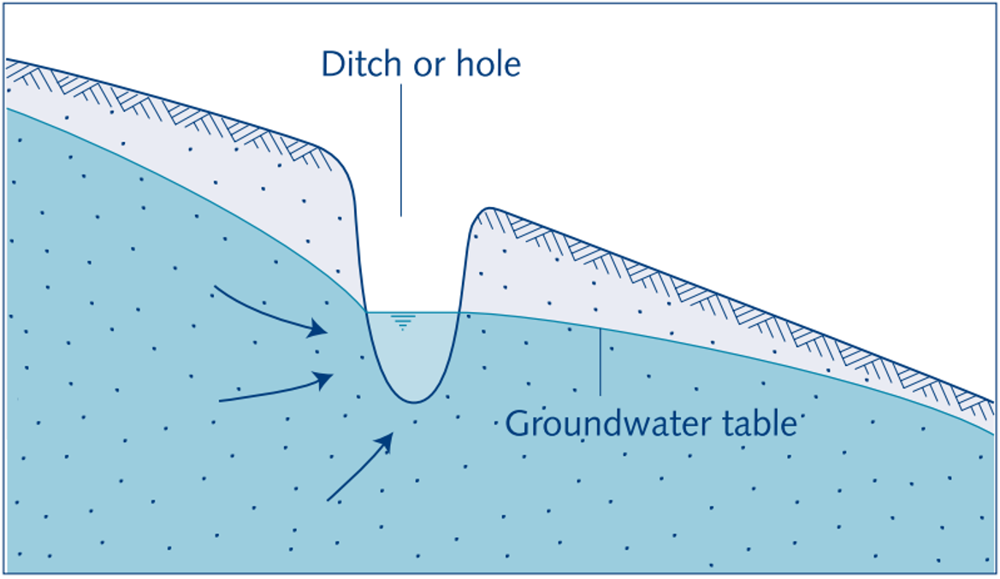
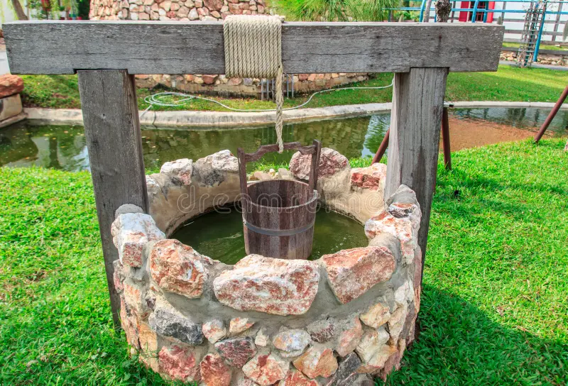
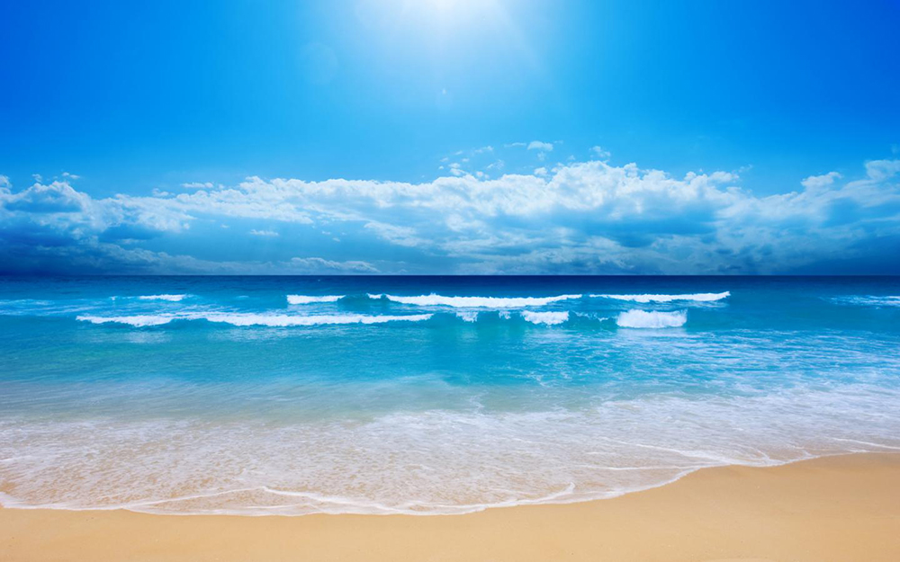
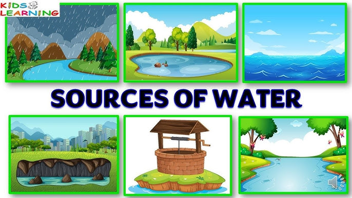
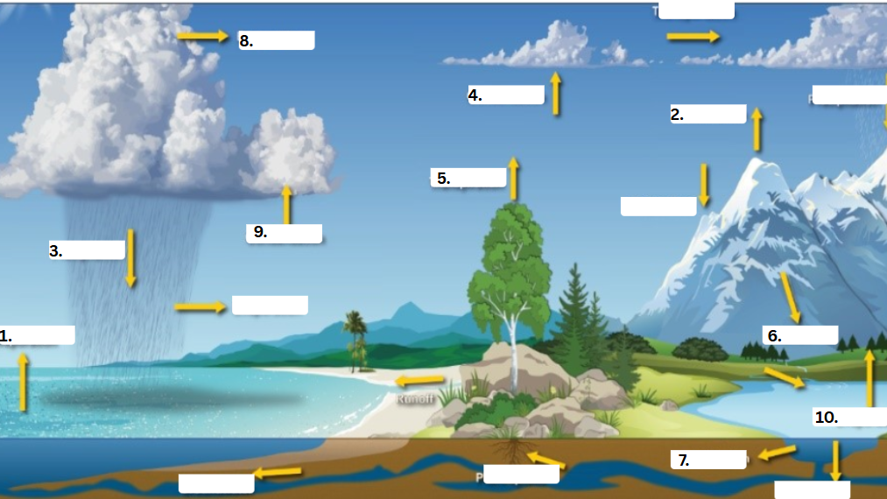

WATER CONSERVATION IN EARTH SCIENCE:
QUARTER 3 - MODULE 2
Quarter 3 - Module 2 (Water Conservation in Earth Science)
Hello, Learners! Welcome to this exciting and insightful lesson about “water conservation” in connection to Earth Science. In this module, you’ll explore the essential sources of water that sustain life, understand the incredible process of the water cycle, and examine how human activities impact both our water and soil resources. As you discover how these natural systems work together, you'll also learn the importance of water conservation and how conserving water can help protect our planet's delicate balance. Get ready to see how Earth Science teaches us not only about the environment but also about our role in safeguarding its future.
WHAT I NEED TO KNOW
Learning Competency:
Use information from secondary sources to describe the possible effects of human activities, such as deforestation, pollution, and introduction of invasive species, on living things in an ecosystem.
This module has been designed to help you gain a deeper understanding of the importance of various water resources on Earth, the process of water cycle, and how human activities impact both our water and soil resources and their role in human life. Water is essential for survival, and this module will focus on the aforementioned above.
By the end of this module, you should be able to:
- Explain the importance of water resources and their role in sustaining life.
- Describe the water cycle and its processes.
- Understand how human activities impact both water and soil resources.
- Identify ways to minimize negative human impact on water and soil systems.
Pre-Assessment!
Direction: Read and analyze the following questions. Choose the letter of the best answer. Write the chosen letter on a separate sheet of paper.
1. What is the primary process by which water moves through the Earth’s ecosystems?
A. Evaporation
B. Precipitation
C. Water cycle
D. Filtration
2. How do human activities such as deforestation affect water resources?
A. They increase the amount of groundwater available.
B. They reduce the natural filtration of water and increase runoff.
C. They improve the efficiency of water cycles.
D. They create new sources of freshwater.
3. What is the term for water that falls to Earth as rain, snow, sleet, or hail?
A. Precipitation
B. Infiltration
C. Evaporation
D. Transpiration
4. Which of the following human actions contributes to soil erosion, which in turn impacts water quality?
A. Proper waste management
B. Sustainable farming practices
C. Deforestation and overgrazing
D. Conservation tillage
5. What happens to most of the water on Earth?
A. It evaporates into the atmosphere.
B. It stays on land as surface water.
C. It remains in oceans and seas as saltwater.
D. It is filtered into underground aquifers.
LESSON 1: Various Water Sources on Earth
Think about your impressions of the reservoirs behind them that you have seen. You might have thought of these as oases — providing relief from summer heat and dryness. Well, we all need and use water in our daily lives for drinking, cooking, washing, cleaning, keeping cool, watering gardens and recreational and cultural activities. Water is one of the Earth’s natural resources and it’s in the things we use and buy every day. We use a lot of water, about 200 liters a person a day but what would life be like if we had limited water or no water?
WHAT’S IN
Directions: You will be analyzing an image comparing a dam before and after experiencing a water shortage. The image highlights the changes in water levels, the impact on the surrounding environment, and potential consequences for local communities and ecosystems. By observing these differences, you will gain insights into the causes and effects of water scarcity and explore solutions for better water management in such situations.

After observing the image, you will find a set of questions related to the changes in the dam. Answer the questions based on your observations of the image and your understanding of water scarcity issues.
Questions:- What changes can you observe in the dam before and after the water shortage?
- How might a decrease in the water level affect the surrounding ecosystem?
- What could be some reasons for the water shortage?
- How might this water shortage affect people who rely on the dam for drinking water or irrigation?
- What are some possible solutions to address the water shortage?
_____________________________________________________________________________
_____________________________________________________________________________
_____________________________________________________________________________
_____________________________________________________________________________
_____________________________________________________________________________
WHAT’S NEW
Directions: Identify the following reservoirs below. In a separate sheet of paper, determine what type of water source is it, whether a surface water or a groundwater source.

2. River

3. Wetlands

4. Water Table

5. Water in a well/Strong>

6. Ocean

WHAT IS IT
This module was designed and written to introduce to you a better understanding of how water resources are useful to humans and how we can conserve water in our small ways.
Water is a finite resource. We live on the driest continent in the world and, as the climate changes, sometimes we have enough water and sometimes we don’t. Up to 70% of water used in schools is lost through leaks. A leaking bubbler wastes 7,000 liters of water every year.(Fecht 2019). By exploring how we use water and identifying water loss in schools and at home, students recognize why and how we should care for water.
Sources of Water
Rainwater, oceans, rivers, lakes, streams, ponds and springs are natural sources of water. Dams, wells, tube wells, hand-pumps, canals, etc, are man made sources of water. These are various sources of water. About 97% of the water on the Earth’s surface is covered with water.
Rain Water
Rain water is collected on Earth in the form of surface water and underground water.

Two Main Sources of water
- Groundwater - The water that is stored beneath the Earth's surface. It seeps through the soil and fills spaces in non-porous rocks. When pressure builds up, this water can emerge naturally as springs. Groundwater can be accessed by digging wells or installing tube wells. It flows through openings in rocks, and the rocks that store and allow the movement of groundwater are known as aquifers.
- Surface Water - It refers to the water found on the Earth's surface, including oceans, rivers, lakes, ponds, reservoirs, and streams. This water primarily originates from rainfall and the melting of snow in mountainous regions. Rivers, which are a major source of surface water, ultimately flow into the sea.
Earth’s Water Distribution
The total amount of water in the planet, also known as Earth's water budget, generally remains constant through time. Water moves and changes in form, but is neither created nor destroyed. Only a very small percentage is added to the hydrologic system by volcanic eruptions and meteors from space. Most of the water on Earth today has been cycling through the hydrologic system for billions of years. You sent -97.5% Ocean -2.5% Freshwater (68.7%) from glaciers, (30.1%) from groundwater, (0.8%) form permafrost, surface water, and atmospheric water. The surface water in rivers, lakes, swamps, soil moisture, living things, atmospheric water vapor, ground ice, and permafrost, constitute only about 0.4% of the total freshwater supply or less than 0.02% or the total water on Earth.
WHAT’S MOREIdentifying Groundwater and Surface Water Resources
Direction: On a separate sheet of paper, list at least five examples of groundwater and surface water resources. Be sure to distinguish between the two types of water sources. After completing the list, answer the following questions:
| Surface Water | Ground Water |
|---|---|
| 1. | 1. |
| 2. | 2. |
| 3. | 3. |
| 4. | 4. |
| 5. | 5. |
Questions:
- What is the main difference between groundwater and surface water?
- Why is it important to conserve both groundwater and surface water resources?
WHAT I HAVE LEARNED
Real or Fake? Water Resources and Conservation Scenarios
Directions: Read each of the following scenarios. Based on what you have learned about water resources (surface water, groundwater, rainwater), determine if each scenario is real or fake. Write "Real" or "Fake" on your answer sheet. Afterward, explain why you think the scenario is real or fake, using facts about water conservation and the sources of water.
- Scenario 1:
"A city that has a large amount of rainfall every year will never face water shortages because the rainwater will be enough to meet all its needs."
Answer: Explanation:
__________________________________________________________________________________________________________________ - Scenario 2:
"Groundwater in aquifers can last forever without being replenished, even if people keep using it at a rapid rate."
Answer: Explanation:
__________________________________________________________________________________________________________________ - Scenario 3:
"Using surface water from rivers and lakes for irrigation is always the best solution for farmers because it doesn't require any effort to conserve water."
Answer: Explanation:
__________________________________________________________________________________________________________________ - Scenario 4:
"Rainwater harvesting is a sustainable solution that helps reduce the demand on local groundwater and surface water supplies."
Answer: Explanation:
__________________________________________________________________________________________________________________ - Scenario 5:
"Water conservation isn’t necessary if you live in a region where there’s plenty of water from nearby lakes or rivers."
Answer: Explanation:
__________________________________________________________________________________________________________________
WHAT I ALREADY KNOW
Direction: Reflect on the importance of water as a vital resource for everyone across the globe and create your own slogans to raise awareness about water conservation. Do this in a long bond paper.
REFLECTION QUESTIONS:
- What did you learn about water’s role in life on Earth while creating your slogan?
_____________________________________________________________________________________________________ - How do you think your slogan can inspire others to care more about conserving water?
_____________________________________________________________________________________________________
ASSESSMENT
Direction: Read and analyze the following questions. Choose the letter of the best answer. Write the chosen letter on a separate sheet of paper.
- What percentage of the Earth's surface is covered by water?
A) 50%
B) 70%
C) 97%
D) 2.5% - Which of the following is NOT a natural source of water?
A) Oceans
B) Rivers
C) Wells
D) Rainwater - What is the primary source of surface water on Earth?
A) Groundwater
B) Rainwater
C) Underground Springs
D) Aquifers - What is the main difference between groundwater and surface water?
A) Groundwater is stored on the Earth's surface, while surface water is found underground.
B) Groundwater is stored beneath the Earth's surface, while surface water is found on top of the Earth's surface.
C) Groundwater is only found in rivers, while surface water is only found in lakes.
D) Groundwater is used for recreational purposes, while surface water is used for drinking. - What is an aquifer?
A) A man-made water reservoir.
B) A type of dam that stores water.
C) A layer of rocks that stores and allows the movement of groundwater.
D) A natural spring where water emerges from underground.
What’s more
Surface water
1. Oceans
2. Rivers
3. Lakes
4. Pods
5. Reservoirs
Ground Water
1. Wells
2. Springs
3. Aquifers
4. Tubewells
5. Underground Rivers
1. Groundwater is water stored beneath the Earth's surface in aquifers and wells, while surface water is found on the Earth's surface in rivers, lakes, ponds, and oceans.
2. Conserving both resources is crucial because they are essential for drinking, agriculture, industry, and ecosystems. Overuse or contamination can lead to water scarcity and damage to the environment.
Pre-Assessment
1. C. Water Cycle
2. B. They reduce the natural filtration of water and increase runoff.
3. A. Precipitation
4. C. Deforestation and overgrazing
5. C. It remains in oceans and seas as saltwater.
6. B. Freshwater
7. C. They introduce harmful chemicals and pollutants into water bodies.
8. C. Groundwater can be contaminated by pollutants infiltration from the surface.
9. C. Subsidence and land sinking.
10. C. Evaporation
What I have Learned
Scenario 1: Answer: Fake
Explanation:
While rainfall is a crucial source of water, it doesn't always guarantee enough water for a city.
Factors like water storage, infrastructure, population growth, and seasonal variability can cause water shortages despite regular rainfall.
Additionally, water quality and distribution play key roles.
Scenario 2: Answer: Fake
Explanation:
Groundwater resources are finite. If aquifers are used faster than they are replenished, they can run dry.
Over-extraction can lead to issues like groundwater depletion, land subsidence, and the intrusion of saltwater into freshwater aquifers.
Scenario 3: Answer: Fake
Explanation:
While surface water is often used for irrigation, it is not always the best solution.
The demand for water can lead to overuse and depletion of surface water resources, especially during droughts.
Water conservation measures, such as drip irrigation, can help reduce waste and improve sustainability.
Scenario 4: Answer: Real
Explanation:
Rainwater harvesting helps conserve both groundwater and surface water.
It collects rainwater for use in homes, gardens, and agricultural practices, reducing the strain on traditional water sources and promoting sustainable water use.
Scenario 5: Answer: Fake
Explanation:
Even in areas with abundant water, conservation is essential. Overuse of water resources can lead to long-term problems like depletion, pollution, and habitat destruction.
Sustainable water management ensures the health of ecosystems and availability of water for future generations.
Assessment
1. C) 97%
2. C) Wells
3. B) Rainwater
4. B) Groundwater is stored beneath the Earth's surface, while surface water is found on top of the Earth's surface.
5. C) A layer of rocks that stores and allows the movement of groundwater.
REFERENCES
WEB RESOURCES
Colorado River drought and conservation efforts. Southern Nevada Water Authority. Retrieved April 9, 2025, from
Here!
Wikipedia contributors. (2015, February 13). Lake. Wikipedia. Retrieved April 9, 2025, from
Here!
iStock. (2013, August 7). Landscape with mountains, trees, and a river in front. iStock. Retrieved April 9, 2025, from
Here!
Joyce Well Drilling. (2019, February 5). The benefits of having a water well. Joyce Well Drilling. Retrieved April 9, 2025, from
Here!
Encyclopaedia Britannica. (2019, July 13). The power of wetlands. Encyclopaedia Britannica. Retrieved April 9, 2025, from
Here!
Venus Kids World. (2016, March 19). Sources of water [Video]. YouTube.
Here!
CONTENT
- Yeshynegarin. (2019, August 23). Chapter 4 Module Earth Science: Water resources Click me!
- Hans, A., & Bharat, A. (2014). Water as a resource: Different perspectives in literature. Click me!
- National Ground Water Association. (n.d.). Click me!
LESSON 2: Water Cycle
In Lesson 1, we learned about the different water resources on Earth, including surface water and groundwater, and why it's important to conserve them.
Now, in Lesson 2, we will explore how water moves and changes in form through the natural processes known as the water cycle.
By understanding the water cycle, we can make more informed decisions about how we conserve water.
The cycle explains how water is replenished, but also how it can be lost through evaporation, runoff, and other processes.
Recognizing this flow allows us to appreciate the natural balance and highlights the importance of protecting and managing our water resources effectively.
WHAT’S IN
Direction: Below are jumbled words related to the water cycle and water conservation. Unscramble the letters to form the correct word. Use the hints provided to help you. Answer this in a separate sheet of paper.
- The process when plants release water vapor into the atmosphere.
(NTSIOAIPTRNE)
___________________________________ - The process where water changes from a gas to a liquid, forming clouds.
(NACDNEOSITAN)
___________________________________ - The continuous movement of water on Earth through various stages.
(RTEAW CLYCE)
___________________________________ - Water that falls from the sky in the form of rain, snow, or hail.
(EITPCIARNOIPT)
___________________________________ - The process where water from the surface of the Earth evaporates into the air.
(VRAEOAIPTN)
___________________________________
WHAT’S NEW
Directions: Read the statements below. If the statement is true, write T in your answer sheets. If the statement is false, write FALSE and correct the statement to make it true.
- Water vapor rises into the atmosphere during the process of evaporation when water is heated by the sun.
- Transpiration is the process where water from plants is released into the atmosphere through their roots.
- Condensation occurs when water vapor cools and forms clouds, which is the first step in the water cycle.
- Precipitation is when water droplets from clouds fall to the ground as rain, snow, or hail.
- Infiltration is the process where water is absorbed by the soil and stored underground as groundwater.
- Runoff occurs when water from rainfall travels over the land and eventually enters oceans, lakes, or rivers.
- Water conservation is unnecessary because water is a renewable resource that will always be available.
- The majority of Earth's water is found in oceans and cannot be directly used for drinking.
- Water cycles through the environment but does not get lost to space or other planets.
- A leaking faucet can waste a significant amount of water, which is why it is important to fix leaks immediately.
- How does the water cycle contribute to the availability of freshwater for human use?
- Why is water conservation important in the context of climate change and growing populations?
WHAT IS IT
What is a Water Cycle?The Water Cycle, Also known as the hydrologic cycle, describes the continuous movement of water on Earth. Source here
Water Cycle Diagram
During this process, water changes its state from one phase to another, but the total number of water particles remains the same. In other words, if it were possible to collect and boil 100 gms of water, it will still retain a mass of 100 gms as steam. Likewise, if 100 gms of steam is collected and condensed, the resultant water would still weight 100 gms.
The water cycle. (Image credit: Dennis Cain/NWS)
Water changes its state through a variety of processes from evaporation, melting and freezing, to sublimation, condensation, and deposition. All these changes require the application of energy.
Stages of Water Cycle
There are many processes involved in the movement of water apart from the major steps given in the above water cycle diagram. Listed below are different stages of the water cycle. BYJU'S. (n.d.).
1. EvaporationThe sun is the ultimate source of energy, and it powers most of the evaporation that occurs on earth. Evaporation generally happens when water molecules at the surface of water bodies become excited and rise into the air. These molecules with the highest kinetic energy accumulate into water vapour clouds. Evaporation usually takes place below the boiling point of water. Another process called evapotranspiration occurs when evaporation occurs through the leaves of plants. This process contributes to a large percentage of water in the atmosphere.
2. SublimationSublimation occurs when snow or ice changes directly into water vapour without becoming water. It usually occurs as a result of dry winds and low humidity. Sublimation can be observed on mountain peaks, where the air pressure is quite low. The low air pressure helps to sublimate the snow into water vapour as less energy is utilised in the process. Another example of sublimation is the phase where fog bellows from dry ice. On earth, the primary source of sublimation is from the ice sheets covering the poles of the earth.
3. CondensationThe water vapour that accumulated in the atmosphere eventually cools down due to the low temperatures found at high altitudes. These vapours become tiny droplets of water and ice, eventually coming together to form clouds.
4. PrecipitationAbove 0 degrees centigrade, the vapours will condense into water droplets. However, it cannot condense without dust or other impurities. Hence, water vapours attach itself on to the particle’s surface. When enough droplets merge, it falls out of the clouds and on to the ground below. This process is called precipitation (or rainfall). In particularly cold weather or extremely low air pressure, the water droplets freeze and fall as snow or hail.
5. InfiltrationRainwater gets absorbed into the ground through the process of infiltration. The level of absorption varies based on the material the water has seeped into. For instance, rocks will retain comparatively less water than soil. Groundwater can either follows streams or rivers. But sometimes, it might just sink deeper, forming aquifers.
6. RunoffIf the water from rainfall does not form aquifers, it follows gravity, often flowing down the sides of mountains and hills; eventually forming rivers. This process is called runoff. In colder regions, icecaps form when the amount of snowfall is faster than the rate of evaporation or sublimation. The biggest icecaps on earth are found at the poles.
All the steps mentioned above occur cyclically with neither a fixed beginning nor an end.
The Water Cycle Song click here.
How is Water Returned Back to the Oceans?
According to the Water Science School (2018). The water cycle is the major source of returning water back to the oceans. The process occurs in the following ways:- The water cycle begins in the oceans.
- The sun heats the water in the oceans.
- The water evaporates as water vapours into the air.
- The ice and snow sublimate directly into vapour.
- The evaporated water from the oceans along with the water that transpired from the plants rises up in the atmosphere with the air currents.
- These vapours condense into clouds that move around the globe by air currents.
- The particles of the cloud grow, collide and fall out of the sky as precipitation.
- Some precipitation falls as snow that accumulates as glaciers and ice caps that can store frozen water for several years.
- The rest falls as rain into the oceans or on the land.
- The water from the land flows into the rivers, ponds and lakes that eventually fall into the oceans.
- This is how the water is returned back to the oceans.
Importance of Water
We all need water for different daily activities including:- Bathing
- Cleaning
- Cooking
- Drinking
- Washing
- Irrigation
- Farming
- Gardening
- Frost control
Apart from this, we drink water to:
- Stay hydrated
- Lubricate Joints
- Regulate the body’s temperature
- Transport nutrients and other waste in the body.
- Balance the loss of water from the digestive tract and body tissues.
Water in Daily Life
The following diagram illustrates the breakdown of water usage in a typical household, highlighting the various activities that contribute to our overall consumption. From flushing toilets and taking showers to washing clothes and using faucets, each percentage reveals how integral water is to our routines. By examining this data, we can identify opportunities to use water more efficiently and ensure its availability for future generations. Sikhwal & Aurisicchio (2023)
Toilet (24%): The toilet accounts for the largest share of household water use. Each flush requires a significant amount of water, making it a major contributor to daily consumption.
Shower (20%): Showers are the second-largest water use category. The duration and flow rate of the showerhead can greatly impact how much water is used during this time.
Faucet (19%): Water usage from faucets includes drinking, cooking, and washing hands. This category highlights our daily activities that require quick access to water.
Clothes Washer (17%): Washing machines also use a considerable amount of water per load. The type of machine and the settings chosen can influence overall consumption.
Leaks (12%): Surprisingly, leaks can waste a significant amount of water if not addressed. Even small leaks can add up over time, contributing to overall water loss in the home.
Other (8%): This category encompasses various other uses, such as watering gardens, filling pools, or cleaning. While individually these uses may seem minor, they collectively add to our daily water footprint.
WHAT’S MORE
Direction:Below is an image of the water cycle. Label the blank boxes with the correct water cycle process. Answer this on a separate sheet of paper.
Reflection Questions:
- Why is it important to understand the different stages of the water cycle, especially when it comes to water conservation?
- After completing the labeling activity, do you have a clearer understanding of the water cycle? How might this knowledge help you in your daily life?
- What are some practical actions you can take to help conserve water, considering your understanding of the water cycle?
What I Have Learned
Direction: Write a brief essay (250-300 words) reflecting on the water cycle and the importance of water conservation. Discuss how the water cycle works and its role in sustaining Earth's water.
Explain why conserving water is crucial and suggest simple actions that can be taken at home or school to help save water.
____________________________________________________________________________________
____________________________________________________________________________________
____________________________________________________________________________________
____________________________________________________________________________________
____________________________________________________________________________________
____________________________________________________________________________________
________________________________________.
WHAT I ALREADY KNOW
Direction: Write a poem that explains the water cycle and its importance. Include at least three stages of the cycle (evaporation, condensation, precipitation, transpiration, infiltration, and runoff) and describe how water moves through these stages. Conclude your poem with a message encouraging others to conserve water. Your poem can be in any format (rhyming, free verse, or haiku) and should be at least 4-6 lines long.
You are graded base on the criteria below:
| Criteria | Percentage | Description |
|---|---|---|
| Content | 40% |
|
| Creativity | 30% |
|
| Structure and Organization | 20% |
|
| Grammar and Language | 10% |
|
ASSESSMENT
Direction: Read and analyze the following questions. Choose the letter of the best answer. Write the chosen letter on a separate sheet of paper.
- What happens during the process of transpiration?
A) Water changes from liquid to gas
B) Water vapor cools into droplets
C) Water is absorbed into the ground
D) Plants release water vapor into the atmosphere - Which of the following best describes sublimation in the water cycle?
A) Water vapor turning into ice
B) Ice turning directly into water vapor
C) Water turning into liquid droplets
D) Water flowing through rivers - Which part of the water cycle primarily involves the movement of water from oceans to the atmosphere?
A) Condensation
B) Evaporation
C) Precipitation
D) Runoff - Where does water vapor form clouds after it rises in the atmosphere?
A) Ground
B) Upper Atmosphere
C) Ocean
D) Mountains - What is the main source of energy that drives the water cycle?
A) Wind
B) The moon
C) The sun
D) Volcanoes
ANSWER KEY
| What's In | What's New | What's More | Assessment |
|---|---|---|---|
|
1. Transpiration |
1. T |
1. Evaporation |
1. D |
References
Web Resource
The Water CycleThe Water Cycle Song
National Council for Special Education. (2020, May). Do plants sweat? Well, sort of... [PDF]. Retrieved April 9, 2025, from .
North Central Educational Service District. (2013). Lesson 2: The role of precipitation.
National Oceanic and Atmospheric Administration. (n.d.). Water cycle.
Content
Water Science School (2018, June 8). Oceans and seas and the water cycle.Fecht, S. (2019, September 23). How climate change impacts our water. Columbia Climate School.
Sikhwal, R. K., & Aurisicchio, M. (2023). Circular consumption of household water: A critical literature
https://www.teacherph.com/wp-content/uploads/2021/09/earthscienceforstem_q1_mod9_variouswaterresourcesonearth_v2.pdf
BYJU'S. (n.d.). Water cycle
National Oceanic and Atmospheric Administration. (n.d.). Water cycle.
North Central Educational Service District. (2013). Lesson 2: The role of precipitation.